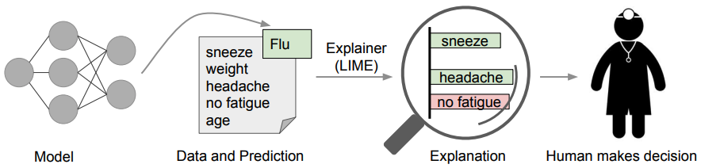

VMAF
Posted on Jun.3, 2021
背景
在评价静态图像主观质量失真方面，SSIM比PSNR有一些优势，在视频方面优势不明显。而VMAF是一种将人类视觉模型与机器学习相结合的视频质量评价指标。 目前能够达到商用级的评价指标非常少，学术界的评价指标主要都是针对有非常明确边界条件约束的场景。而Netflix提出的VMAF作为商用级的评价指标，值得我们关注。VMAF: Video Multimethod Assessment Fusion
VMAF: 未毕之旅 与南加大(USC)合作启动 ◎ 2014年 首度在Netflix上线使用 ◎ 2015年 与南特大学(U.Nantes)，德州大学奥斯汀分校(UT Austin)合作 ◎ 2016年 在Github开源，并发布技术博客 ◎ 2017年 版本发布增加移动端画质模型(同样码率，移动端得分会更高)， libvmaf发布；被FFmpeg支持 ◎ 2018年 速度优化，增加4K画质模型，增加置信区间，准备HDR模型
原理
Visual Information Fidelity : Sheikh H R, Bovik A C. A visual information fidelity approach to video quality assessment[C] Detail Loss Measure : Li S, et al. Image quality assessment by separately evaluating detail losses and additive impairments[J]. Temporal Information : average pixel difference between adj, frames
亮点
- 置信区间 自助法(Bootstrapping)
出发点，
1. 因为MOS没反映评分的置信度，比如说没有统计评分的方差。2. 机器学习的训练集并没有包罗万象。自助法，
Bootstrapping - "Resampling with Replacement" 学习多个模型，然后统计他们的评分方差。得分的散点图就类似股票K线图的点，有一个区间。
改进
-
VMAF具有一些性质，所以值得我们去研究、改进它。
- Evolvability
可以轻松地加入新的指标，来提升评价准确性。
泛化能力没完全保证，但Netflix也在不断增加数据多样性(分辨率、观看环境)
可以定制化，剪裁掉不需要的指标/训练数据
问题
- Hacking VMAF 来自VMAF讨论组
我概括一下这篇文档里面描述的我们近期的一些工作。VMAF的特性决定了其能够预测一些图像增强处理对主观质量的提升。 这是VMAF与PSNR和SSIM等传统工具的一大区别。但当过度使用一些图像增强效果的时候（比如过度锐化），主观质量反而会降低， 但VMAF的值会继续提高，也就是说在过度增强的情况下，VMAF并不能真实反映主观图像质量。我们近期的工作主要是在VMAF的两个 主要feature也就是VIF和DLM里，引入了两个参数，来限制图像增强能够对VMAF产生影响的上限。具体来讲，引入的参数是vif_enhn_gain_limit和adm_enhn_gain_limit。 当它们的值设置为很大的时候（比如都为100)，则对VMAF的值没有影响。而当它们的值都为1的话，则能最大限制图像增强对VMAF的值的提升。 而当设置一些适当值（比如稍大于1）的话，则可以一定程度地引入图像增强的提升但又不会过度。具体什么为适当值的问题，我们留到后续版本的VMAF模型里来解决。
VMAF通过融合多个基本的指标，使用非线性回归(如SVM)，来预测视频质量。 但如果有能力解释各个基本的指标对最终得分的贡献，对我们设计算法会很有帮助。 ○ 就类似一个线性回归会比较nice，"权重"能表示重要性。
LIME - Local Interpretable Model-Agnositc Explanation
概括： ○ 在本地实例上，"线性化"一个非线性分类器C/回归器R。 ○ "线性"分类器C/回归器R的系数可以视为各特征的权重。
用途
- VMAF @ Netflix
在网飞，VMAF被用来 ①比较编解码器 ②编码优化
代码
- 基础使用
Absolute Category Rating (ACR) Scale ——— <20 ——— Bad = 20 ——— Poor = 40 ——— Fair = 60 ——— Good = 80 ——— Excellent = 100 且观看条件为optimal viewing模型，例如：一个1080p，在显示器高度的3倍距离观看时，VMAF得分70的视频可以被解释为平均投票介于"good"和"fair"
算术平均 & 调和平均， 前者更忠实整体视频主观感受，后者能反映出个别帧的bad cases.
小知识
最佳测试条件 Optimal viewing 是根据人眼敏感频率(cycles/degree, i.e. 2 pixels/degree)设计出来的。 这里的默认模型就是在"60 pixels/degree"收集的。所以如果要在比如540p的视频上解释VMAF，就需要在6.4H距离: 60 * (arctan(1/6.4 * 2)) * 2 * 180 / π) = 536.1